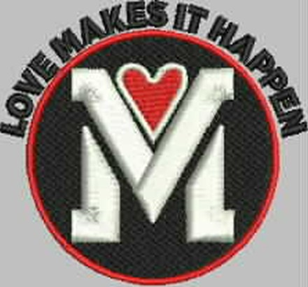
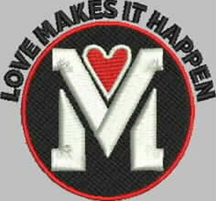
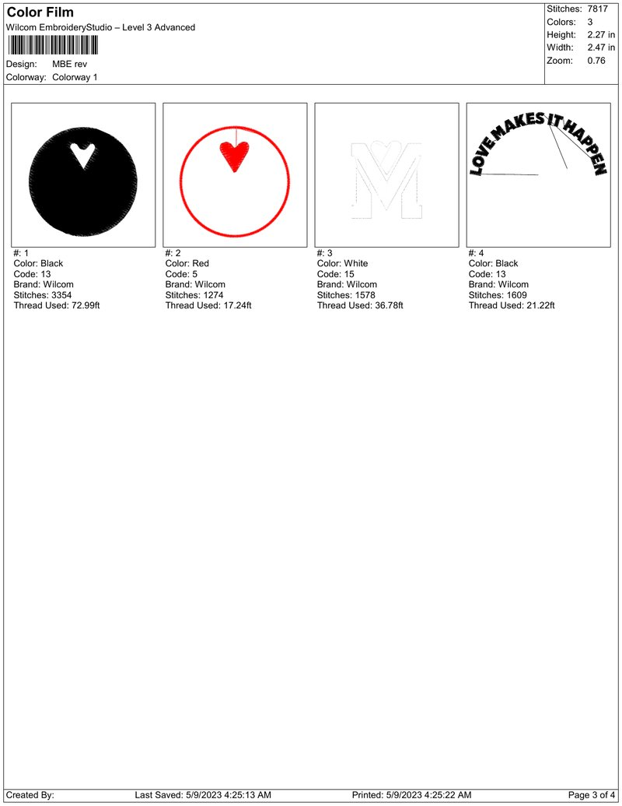

Graphic Facts × Stitch Town · Spring 2023
Love Makes It Happen
From the client’s art to 85 embroidered caps: a front logo plus “Mill Valley, CA” on the back.

The brief
Fit the whole logo on a low-profile cap front, as large as possible
FRONT
Round black badge with a white “M”, red heart and red ring, under an arc of “LOVE MAKES IT HAPPEN”.
BACK
“Mill Valley, CA” across the back of every cap.
ART
Illustrator files with outlined type from the client, then a final back file before production.
How it came together
Five steps from art to finished caps
Art. Front and back art received. Back updated to “CA”.
Digitizing. Logo converted into a stitch file.
Proofs. Four sewout rounds, approved on a test cap.
Refinement. Cleaner letters and more space.
Production. 85 caps, front and back.
Proof day · Friday, May 5
Four sewout rounds in under two hours
- Round 1Edges too jagged. More gap needed between the red ring and the letters.
- Round 2Not there yet.
- Round 3Open up the E’s and move the letters out.
- Round 4Approved. Sewn on a test cap to show real size.



Refinement · May 8–10
Small changes that make the lettering read at cap size
- Thinner strokes on the arc letters
- Open E’s, so the counters show
- Letters moved out from the red ring
- More space between the arc and the badge
The final front logo
Three thread colors, sewn in four passes
| Pass | Thread | What it sews |
|---|---|---|
| 1 | Black | Badge background |
| 2 | Red | Heart and outer ring |
| 3 | White | The “M” |
| 4 | Black | “LOVE MAKES IT HAPPEN” arc |

Have a logo to stitch?
Tell us the garment, the quantity and where the logo goes. We reply with a quote and next steps.